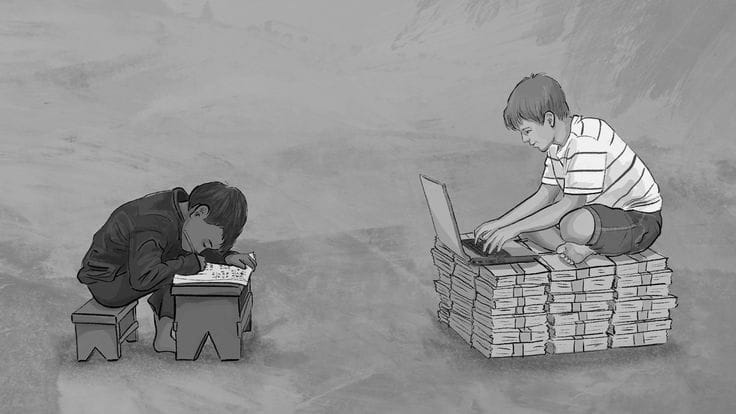
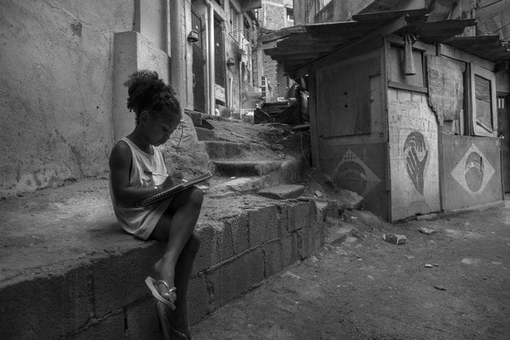

Ninguém nasce invisível.
Milhões de jovens brasileiros crescem sem acesso a escola de qualidade, primeiro emprego e espaço para serem ouvidos. Aqui você entende por que isso acontece e descobre caminhos reais e gratuitos para mudar o jogo.
Ver cursos gratuitosQuero ser jovem aprendizO que é marginalização juvenil?
É quando jovens são deixados de fora da escola, do trabalho, da cultura e das decisões da sociedade. Quase sempre atinge quem é pobre, negro, periférico, mulher, LGBTQIA+ ou tem deficiência. Não é falta de esforço: é falta de oportunidade.

Três caminhos para começar
Talento existe em todo lugar. Oportunidade, não.